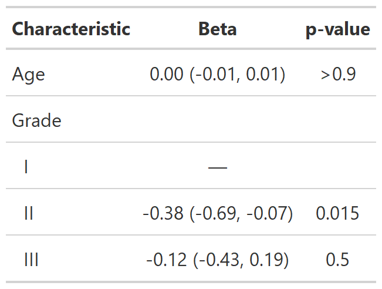

![[Experimental]](../help/figures/lifecycle-experimental.svg) Merge two or more columns in a gtsummary table.
Use
Merge two or more columns in a gtsummary table.
Use show_header_names() to print underlying column names.
| modify_cols_merge {gtsummary} | R Documentation |
Merge two or more columns in a gtsummary table.
Use show_header_names() to print underlying column names.
modify_cols_merge(x, pattern, rows = NULL)
x |
gtsummary object |
pattern |
glue syntax string indicating how to merge columns in
|
rows |
predicate expression to select rows in |
gtsummary table
Calling this function merely records the instructions to merge columns.
The actual merging occurs when the gtsummary table is printed or converted
with a function like as_gt().
Because the column merging is delayed, it is recommended to perform
major modifications to the table, such as those with tbl_merge() and
tbl_stack(), before assigning merging instructions. Otherwise,
unexpected formatting may occur in the final table.
There are planned updates to the implementation of this function
with respect to the pattern= argument.
Currently, this function replaces a numeric column with a
formatted character column following pattern=.
Once gt::cols_merge() gains the rows= argument the
implementation will be updated to use it, which will keep
numeric columns numeric. For the vast majority of users,
the planned change will be go unnoticed.
Example 1

Example 2

Other Advanced modifiers:
modify_column_hide(),
modify_fmt_fun(),
modify_table_body(),
modify_table_styling()
# Example 1 ----------------------------------
modify_cols_merge_ex1 <-
trial %>%
select(age, marker, trt) %>%
tbl_summary(by = trt, missing = "no") %>%
add_p(all_continuous() ~ "t.test",
pvalue_fun = ~style_pvalue(., prepend_p = TRUE)) %>%
modify_fmt_fun(statistic ~ style_sigfig) %>%
modify_cols_merge(pattern = "t = {statistic}; {p.value}") %>%
modify_header(statistic ~ "**t-test**")
# Example 2 ----------------------------------
modify_cols_merge_ex2 <-
lm(marker ~ age + grade, trial) %>%
tbl_regression() %>%
modify_cols_merge(
pattern = "{estimate} ({ci})",
rows = !is.na(estimate)
)